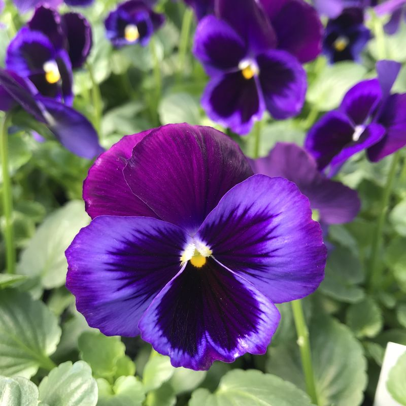

Fall Planting in Indiana: Why September and October Are Secret Planting Seasons
Warm soil, cool air and steadier rain make fall one of the best times of year to plant trees, shrubs, perennials, bulbs and garlic in central Indiana.

Ask most people when to plant and they'll say spring. But some of the most successful planting in central Indiana happens in September and October. The soil is still warm from summer, the air is cooler, the sun is gentler, and rain is usually more reliable than in August. Plants put their energy into roots instead of leaves and flowers, so they head into next summer already established.
This guide covers why fall planting works, what to plant, and how to give new plants the best start before winter.
Why fall planting works
Warm soil, cool air
Roots grow as long as soil temperatures stay above about 40°F. In central Indiana, soil often stays warm enough well into November, long after the air has cooled. That gives new plants weeks of root growth without the stress of summer heat on their leaves.
Less stress, less watering
Shorter days and cooler temperatures mean plants lose less water through their leaves. You'll still need to water new plantings, but far less often than in July.
A head start on summer
A tree or shrub planted in fall has a full fall, and then a spring, to grow roots before facing its first hot summer. Spring-planted trees have only a few weeks.
Fewer pests and weeds
Many insect pests have slowed down by fall, and weed seeds germinate less.
What to plant in fall
Trees and shrubs
Fall is prime time for most trees and shrubs. Container-grown deciduous trees like maples, redbuds, oaks, crabapples and river birch, and shrubs like hydrangeas, lilacs, viburnum, ninebark and spirea all establish well. Our nursery yard stocks trees and shrubs from April through October.
A few exceptions do better planted in spring: some slow-rooting trees such as magnolia and tulip poplar, and borderline-hardy plants, which benefit from a full season of root growth before winter.
Evergreens like spruce, pine and arborvitae should be planted by early October so roots can grow before the ground freezes. They lose moisture through their needles all winter, so deep watering before freeze-up is essential.
See our tree guide for step-by-step planting.
Perennials
Most perennials can be planted in fall. Get them in by early to mid-October so they root in before hard freezes. Spring- and summer-blooming perennials, such as peonies, coneflower, daylilies, hostas, catmint and salvia, are ideal fall plantings.
Fall is also the time to divide crowded spring and summer bloomers. Dig the clump, split it with a spade or knife into pieces with healthy roots and shoots, and replant. Peonies are traditionally divided and planted in September.
A few perennials prefer spring planting, especially those that need sharp drainage and can rot in a wet first winter: lavender, penstemon, red hot poker and some ornamental grasses.
Garden mums and fall annuals
Fall color arrives at the greenhouse in September:
- Garden mums in every fall color
- Ornamental cabbage and kale, which deepen in color as nights cool and handle frost
- Pansies and violas, which bloom in fall and often come back with a second show in spring
- Asters, ornamental grasses and heuchera for fall containers
About mums: if you want mums to come back, plant them in the ground early (by mid-September is ideal), water through dry spells, leave the dead stems on over winter for protection, and mulch around the base after the ground cools. Mums planted late or kept in pots often don't survive the winter, and many people simply enjoy them as seasonal color.
Spring-flowering bulbs
Tulips, daffodils, hyacinths, crocus and alliums must be planted in fall to bloom next spring.
- When: late September through November, once soil has cooled, before the ground freezes.
- How deep: about three times the height of the bulb. Large tulips and daffodils go about 6 to 8 inches deep; small crocus about 3 to 4 inches.
- Which way up: pointed end up. If you can't tell, plant on its side; it will right itself.
- Plant in groups of at least ten for a natural look, rather than single rows.
- Deer note: daffodils and alliums are reliably avoided by deer; tulips are a deer favorite.
Garlic
Garlic is planted in fall and harvested the next July. Plant individual cloves, pointed end up, 2 inches deep and 6 inches apart, in October. After the ground cools, mulch with 3 to 4 inches of straw. We carry garlic bulbs in spring and fall.
Cool-season vegetables
The fall vegetable garden starts in summer:
- Late July: transplant broccoli, cabbage, cauliflower, kale and collards.
- August: sow lettuce, spinach, radishes, turnips, beets and Asian greens.
- September: sow quick lettuce, spinach and radishes. Spinach sown in September can overwinter under mulch for an early spring crop.
Many of these improve with frost. Kale, collards, Brussels sprouts, carrots and parsnips taste sweeter after cold nights.
Lawns
Late August through September is the best time to seed or overseed cool-season lawns in Indiana. Soil is warm for germination, and weeds are less competitive. We carry ExecTurf grass seed blends for sun, shade and high-traffic lawns.
How to plant in fall for success
- Plant early enough. For trees, shrubs and perennials, earlier is better. September and early October give roots the most time.
- Plant at the right depth. Trees with the root flare at the surface; perennials at the depth they grew in the pot.
- Water deeply after planting, then about once a week if rain doesn't do it, until the ground freezes. Fall droughts are common, and roots are actively growing.
- Mulch. Two to three inches of shredded mulch holds moisture and evens out soil temperatures. For perennials, add mulch after the ground starts to cool to reduce frost heaving.
- Skip the nitrogen. Heavy fertilizer in fall pushes soft growth that winter can damage.
- Protect young trees from deer rubbing and rodents with trunk guards.
Fall garden cleanup, the smart way
Fall cleanup doesn't mean cutting everything to the ground.
- Leave seed heads on coneflowers, black-eyed Susans, sedum and ornamental grasses for birds and winter interest.
- Cut back plants with diseased foliage, such as bee balm with powdery mildew, peonies with leaf blotch, and iris with leaf spot.
- Rake leaves off lawns, but use them. Shredded leaves make excellent mulch for beds or a great addition to the compost pile.
- Clean up vegetable beds of diseased plants, especially tomato foliage, and don't compost it.
- Bring tender plants indoors before nights drop into the 40s. That includes houseplants that summered outdoors, tropicals like mandevilla and hibiscus, and tender herbs like rosemary.
- Clean and store tools and hoses, and empty clay pots before they freeze.
A fall planting calendar for central Indiana
| When | What to do |
|---|---|
| Late July | Transplant fall broccoli, cabbage, kale, collards |
| August | Sow fall lettuce, spinach, radishes, turnips; seed lawns from late August |
| Early September | Plant trees, shrubs and perennials; plant mums; divide peonies |
| Mid-September | Plant evergreens; finish dividing perennials; ornamental kale and pansies |
| Late September–October | Plant spring bulbs and garlic; finish perennial planting by mid-October |
| October | Average first frost around mid-month: bring tender plants in, harvest squash |
| November | Water evergreens and new plantings deeply before freeze-up; mulch perennials |
Planting bulbs in fall
Fall is the only time to plant spring-flowering bulbs like tulips, daffodils, crocus, hyacinths and alliums. They need a winter of cold to bloom.
- When: after soil cools, usually October into early November in central Indiana. Plant any time before the ground freezes.
- How deep: a common rule is two to three times the height of the bulb, pointed end up. Large tulips and daffodils go about 6 to 8 inches deep; small bulbs like crocus 3 to 4 inches.
- Plant in groups. Clusters of ten or more look far better than single rows.
- Deer and squirrels: daffodils and alliums are rarely bothered. Tulips and crocus are favorites of both. Planting tulips among daffodils, or under a layer of chicken wire, helps.
- Water after planting to settle soil around the bulbs and start root growth.
Fall lawn and garden soil care
Fall is a good time to test soil and add amendments, since lime and sulfur take months to work. Spread compost on vegetable beds, or plant a cover crop such as cereal rye to protect the soil over winter. Keep watering newly planted trees, shrubs and perennials until the ground freezes; evergreens in particular go into winter better with moist roots.
Overwintering tender plants
Before the first frost, bring houseplants that summered outdoors back inside, checking them for insects first. Tender perennials such as geraniums can be potted up and grown on a sunny windowsill. Dig tender bulbs and tubers like dahlias, cannas and elephant ears after frost blackens the foliage, let them dry, and store them cool and dry over winter.
Plan your fall visit
Fall is one of our favorite seasons at the greenhouse: mums, ornamental cabbage and kale, pumpkins and gourds, and our annual Fall Festival. It's also a great time to choose trees and shrubs while there's still a good selection in the yard. See what's in season now, browse trees and shrubs, or check our central Indiana planting calendar for the whole year.
Frequently asked questions
Is fall a good time to plant trees in Indiana?
Yes, it’s one of the best. Warm soil encourages root growth while cooler air reduces stress on leaves, so trees establish before summer heat. Plant from September through October and water until the ground freezes.
When should I plant mums so they come back?
Garden mums planted in early fall have the best chance of overwintering. Plant them in the ground by mid-September if you can, water well, leave the stems standing over winter, and mulch around the base after the ground cools. Many people treat fall mums as seasonal color and replace them each year.
When do I plant tulip and daffodil bulbs in Indiana?
From late September through November, once soil temperatures have cooled, and before the ground freezes. Plant most bulbs about three times as deep as the bulb is tall, pointed end up.
What vegetables can I plant in fall in Indiana?
In late July and August, plant broccoli, cabbage, kale, collards, lettuce, spinach, radishes and turnips for fall harvest. Plant garlic in October for harvest the next summer.
Should I fertilize when planting in fall?
Not heavily. Avoid high-nitrogen fertilizers in fall, which push tender new growth that winter can damage. Focus on good planting, mulch and steady watering.
Further reading & sources
Questions about your own garden? Call us at (765) 364-0556 or stop by the greenhouse. Bring photos.
Plants in this article
Find them in the catalog


Keep reading